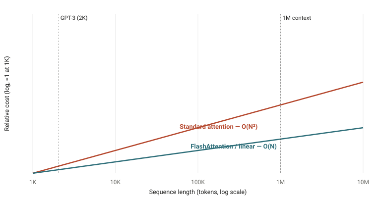
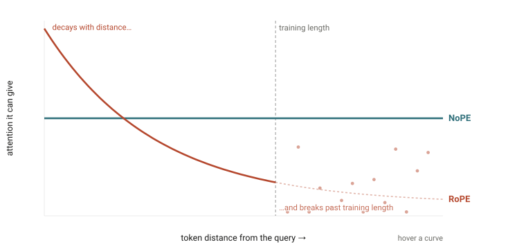

The path to 1M context window
Table of Contents
On positional encoding, the KV cache, attention, and everything else that had to change to read a million tokens.
In the last two years the million-token context window went from headline to spec sheet. Gemini 1.5 got there first in early 2024; GPT-4.1, Claude 4, Qwen, Llama 4, and DeepSeek V4 have all shipped 1M windows since, and increasingly they hold up across the whole million rather than falling apart in the middle. A million tokens is now the floor, with 2M, 4M, even 10M already in preview. The open question isn't whether the next model takes a million tokens — it's how.

That is a ~5,000× jump from GPT-3's 2,048 tokens, and it didn't come from one trick. Long context stresses six parts of a model at once — positional encoding, the KV cache, the attention algorithm, the architecture, the training recipe, and the systems around them — and each had to be rebuilt. Let's walk the stack.
Why Length Is Expensive: Attention Scales as N², Memory as N
Long context is expensive for two reasons, and the two scale very differently. The first is attention itself. In a standard Transformer (Vaswani et al., 2017) every token attends to every other token, so the cost of the attention step grows with the square of the sequence length, O(N²). Going from 2,048 tokens to a million makes that step on the order of 250,000× larger, which is the simple reason training on long sequences was infeasible for years.
The second reason is the KV cache. While a model generates text, it stores the key and value vectors of every token it has already seen so that it doesn't recompute them, and that memory grows linearly with the length of the context. The slope is gentle, but the constant is large: a 70B model like Llama 3 (Dubey et al., 2024) holds roughly 40 GB of KV cache at 128K tokens, on top of its ~140 GB of weights. At a million tokens, it would not fit on a single accelerator.

These two costs are what make long context expensive, but they are not the whole story. Cheaper attention and a smaller cache are necessary, and two of the sections below attack them directly; the others fill in the remaining pieces. We start with the one that came first, because it set a hard ceiling on length itself: how the model represents position.
Positional Encoding: RoPE for Local Order, NoPE for Long-Range Reach
Almost every model today encodes position with RoPE, rotary position embedding (Su et al., 2021). Rather than add a position vector to each token, RoPE rotates every query and key by an angle proportional to its position, so that the attention score between them depends only on their relative distance (m − n). It is parameter-free and, since LLaMA adopted it, effectively universal — Mistral, Qwen, DeepSeek, and Gemma all use it. It is the foundation everything else in this section builds on.
RoPE has two properties, though, that are helpful up close and become liabilities at range. The first is a built-in long-term decay: the rotation makes the query–key score fall off as two tokens move farther apart — exactly what you want for local word order, and exactly what you do not want when the useful information sits a million tokens back. The second is that RoPE's rotation frequencies are effectively calibrated to the training length; feed it positions far beyond what it saw in training and those angles are out of distribution, so attention degrades. RoPE is both anchored to where it trained and biased toward the neighborhood — the two things that hurt most at a million tokens.

You can stretch RoPE's range with a brief continued-pretraining pass — Position Interpolation (Chen et al., 2023) and YaRN (Peng et al., 2023) are the standard tricks, and they are what carry most models to 128K and beyond — but they only push the training-length anchor outward; they do nothing about the decay. A RoPE model stretched to a million tokens still struggles to attend uniformly across them.
The newest idea fixes both at once, and it is almost embarrassingly simple: on a fraction of the layers, use no positional encoding at all (NoPE) and let them read order from the causal mask alone (Kazemnejad et al., 2023; Yang et al., 2025). A NoPE layer has no rotation, so it has neither problem — no distance decay, so it can attend across the whole sequence, and no training-length anchor, so nothing goes out of distribution as the context grows. The recipe is to keep RoPE on most layers for sharp local order and let the position-free layers do the long-range reaching.
This is what the longest-context models actually do. Meta's Llama 4 (2025) calls it iRoPE: roughly three RoPE layers for every one NoPE layer, plus an inference-time attention-temperature scaling, trained at 256K and generalizing to 10M tokens. Hugging Face's fully-open SmolLM3 (2025) uses the same recipe — RoPE on three-quarters of its layers, NoPE on every fourth. Because SmolLM3 publishes its weights and its training recipe, it is the clearest public confirmation of the pattern; the proprietary 1M models (Gemini, GPT-4.1, Claude) do not disclose their positional scheme but are widely assumed to do something similar. The modern answer to "how do you encode position for a million tokens?" is to keep it where it helps and drop it where it hurts.
The KV Cache: Shrink the Memory That Length Multiplies
Even with positions solved, the KV cache remains the memory bottleneck at inference, because its size is a per-token cost multiplied by the length of the context. The way to make a million tokens fit, then, is to shrink what each token costs — and the history of attention heads is largely a history of doing exactly that, by giving fewer heads their own keys and values.
- Multi-Head Attention (MHA) — the GPT-3 baseline, in which every head caches its own K and V.
- Multi-Query Attention (MQA) — all query heads share a single K/V head (Shazeer, 2019). With 128 heads that is a 128× smaller cache, at some cost in quality.
- Grouped-Query Attention (GQA) — the pragmatic middle ground (Ainslie et al., 2023): split the heads into G groups that each share one K/V pair. With 8 groups you get an 8–16× reduction while keeping almost all of MHA's quality, and an existing MHA checkpoint can be "uptrained" to GQA with about 5% of the original compute. Llama 2/3, Mistral, and most open models use it.
- Multi-head Latent Attention (MLA) — DeepSeek's approach (DeepSeek-V2, 2024): rather than use fewer heads, compress K and V into a low-rank latent vector (plus a small decoupled RoPE component) and cache only that. DeepSeek reported a 93.3% reduction in KV-cache size and 5.76× higher throughput.

Attention: Getting Out From Under the O(N²) Wall
Shrinking the cache helps inference memory, but training still has to compute attention, and that is where the quadratic cost bites hardest. Two strategies emerged in response: make the exact computation IO-efficient, or make it sparse.
The IO-efficient line is anchored by FlashAttention (Dao et al., 2022), the single most important piece of plumbing here. It computes exact attention without ever writing the N×N matrix to high-bandwidth memory: it tiles Q, K, and V into SRAM-sized blocks and keeps a running softmax. The activation memory drops from O(N²) to O(N), and HBM traffic falls by roughly 9× in practice — the often-quoted "O(N²)→O(N)" is a simplification; the precise bound is O(N²d²/M). FlashAttention-2 (Dao, 2023) and FlashAttention-3 (Shah et al., 2024) then pushed hardware utilization from about 25% to 75% on A100 and H100, and almost every model since 2023 trains on this kernel.
The sparse line attacks the exponent itself. Sparse Transformers (Child et al., 2019) cut O(N²) to O(N√N), and Longformer (Beltagy et al., 2020) and BigBird (Zaheer et al., 2020) used a sliding window plus a few global tokens to reach O(N). Mistral 7B (Jiang et al., 2023) shipped sliding-window attention with a rolling KV buffer as a headline feature. StreamingLLM (Xiao et al., 2023) made a lovely observation — models dump excess attention onto the first few "sink" tokens, so keeping just those four sink tokens plus a recent window lets a model generate indefinitely at fixed memory. More recently, DeepSeek's Native Sparse Attention (2025) makes sparsity trainable end-to-end, combining compressed, selected, and local-window paths for roughly 11× faster decoding at 64K.
Do You Even Need Attention?
If attention is inherently quadratic, a natural question is whether you need it at all. State-space models (SSMs) answer no, at least in part: they compress the entire past into a fixed-size state, which gives O(N) time and O(1) inference memory, like a recurrent network that can still be trained in parallel.
The line runs from HiPPO and S4 (Gu et al., 2021), which first cracked the 16K-token Long Range Arena tasks where Transformers had scored near chance, through Mamba (Gu & Dao, 2023), whose selective mechanism lets the state decide what to keep. A 3B Mamba matched Transformers twice its size on perplexity and ran about 5× faster at long sequences. Mamba-2 (Dao & Gu, 2024) then proved a formal duality between SSMs and attention, unifying the two families.
The catch is that pure SSMs are weaker at precise recall — looking up an exact token far back, where Mamba's multi-query associative recall collapses while attention stays near 100%. So the winning designs are hybrids. Jamba (Lieber et al., 2024) interleaves one attention layer per seven Mamba layers, plus MoE, and fits a 256K context in 4 GB of KV cache where a comparable Transformer needs 32 GB. Samba (Ren et al., 2024) pairs Mamba with sliding-window attention and extrapolates to 256K. In both, the attention layers handle exact retrieval and the SSM layers handle cheap long-range compression.
Capability Isn’t Enough — You Have to Train on Long Sequences
None of the machinery above matters if a model only ever trains on short sequences. But training everything at 128K would be absurdly expensive — that quadratic cost again — so the industry converged on a multi-stage curriculum: do the vast bulk of pretraining at a short length, where attention is cheap, and follow it with a short, carefully data-engineered long-context phase.
Llama 3 (Dubey et al., 2024) is the canonical example. It trained on roughly 15T tokens at 8K, then added about 800B tokens ramping through six stages from 8K to 128K, with the RoPE base raised to 500,000. Each stage advanced only once two criteria were met: short-context benchmarks had recovered, and needle-in-a-haystack recall had reached nearly 100% at the new length. DeepSeek-V3 (2024) did much the same with two 1,000-step YaRN phases (4K → 32K → 128K) on top of 14.8T tokens of 4K pretraining, buying 128K of context for the cost of 2,000 extra steps.
The data details turned out to matter as much as the length:
- Document packing with intra-document masking — pack many short documents into one long training sequence for efficiency, but mask attention so that each token only sees its own document.
- Long-data upsampling — code repositories and books carry genuine long-range dependencies. Princeton's ProLong (Gao et al., 2024) showed that the right data mix, trained on just 40B tokens, beat Llama-3.1-8B-Instruct's roughly 800B-token long-context training on the HELMET benchmark.
- Synthetic long-range tasks — fill-in-the-middle, key and passage retrieval, and paragraph reordering inject the long-distance structure that natural text often lacks, a recipe used in Qwen2.5-1M (Qwen Team, 2025).
When the Sequence Is Too Big for One GPU
A million-token sequence does not fit on a single device, so the sequence itself gets sharded. Context (or sequence) parallelism splits the tokens across GPUs; Llama 3 used a context-parallel degree of 16, so each rank handled an 8K slice of a 128K sequence. The elegant version is Ring Attention (Liu et al., 2023), which arranges the devices in a ring and streams KV blocks around it while overlapping that communication with computation, so the communication is effectively free. It scales context linearly with the number of devices — demonstrated at 256K tokens on 8× A100 and at millions of tokens on larger pods — and, together with sequence-parallel activation sharding (Korthikanti et al., 2022), is the lineage behind Gemini 1.5's million-token training (Gemini Team, 2024).
On the inference side, PagedAttention (Kwon et al., 2023), the idea behind vLLM, borrowed virtual-memory paging from operating systems: it stores the KV cache in non-contiguous blocks via a page table, which cuts memory waste from 60–80% down to under 4% and lets one server hold far longer contexts or larger batches. Together with FP8 KV quantization, this is what makes long context economical to serve, not just to train.
Why Long Training Runs Blow Up
Longer sequences and larger models make training more fragile, and a single loss spike partway through a 128K run can corrupt something very expensive. The stability toolkit grew to match — most of it invisible in model cards, but essential.
- Pre-LN and AdamW — moving LayerNorm inside the residual branch, and decoupling weight decay with AdamW (Loshchilov & Hutter, 2017), were the early enablers of stable deep training; both are now near-universal.
- Schedules — the GPT-3-era linear-warmup-plus-cosine schedule gave way to Warmup-Stable-Decay (Hu et al., 2024), which is "horizon-free": you can trigger the decay at any point, which is perfect for bolting a long-context phase onto a finished base model.
- z-loss and QK-norm — a small penalty on the softmax normalizer (z-loss) and normalizing queries and keys before attention (QK-norm) both head off logit explosion. QK-norm matters more at long context, where one collapsed attention distribution loses information across the whole sequence.
- muP and MetaP — parametrizations (Yang et al., 2022) that keep optimal hyperparameters stable as width grows, so you tune on a small proxy and transfer to the full model without re-tuning at each stage.
- Muon — a newer optimizer that orthogonalizes gradient updates, reported at roughly 2× the compute efficiency of AdamW and adopted (as MuonClip, with spectral-norm clipping for attention stability) in trillion-parameter models such as Kimi K2.
A Long Window Is Useless If the Model Ignores the Middle
A model can have a 1M-token window and still ignore most of it, and two findings drove the field to take that seriously. "Lost in the Middle" (Liu et al., 2023) showed a U-shaped curve: models reliably use information at the start and end of the context but miss things in the middle, dropping more than 30 points on multi-document QA. And Anthropic found that Claude 2.1 scored just 27% on needle retrieval until a one-line prompt nudge raised it to 98% — a reminder that long-context ability can be suppressed by post-training, not only enabled by it.
Evaluation matured past perplexity into targeted probes. Needle-in-a-Haystack plants a fact and asks the model to find it; RULER (Hsieh et al., 2024) builds synthetic tasks at controlled lengths that expose a model's effective context, which is usually well below its advertised one; and LongBench (Bai et al., 2023) and InfiniteBench broadened the coverage. These benchmarks became training targets in their own right — Llama 3 literally gated each context-extension stage on near-perfect needle recall. The frontier claim today is Gemini 1.5's better-than-99.7% recall at 1M tokens (Gemini Team, 2024) and GPT-4.1's 100% needle retrieval to 1M.
The Modern 1M Recipe, Assembled
Put it all together and a 2026-era long-context model looks roughly like this:
| Layer | GPT-3 (2020) | 1M-context model (2025–26) |
|---|---|---|
| Positional encoding | Learned absolute (cap 2,048) | RoPE + YaRN/LongRoPE, or iRoPE+NoPE |
| Attention heads | Full MHA | GQA or MLA (+ KV quantization) |
| Attention algorithm | Dense O(N²) | FlashAttention-3, sliding window, sinks, sparse |
| Architecture | Dense Transformer | MoE, sometimes SSM hybrids |
| Training | Single length, 2K | Multi-stage curriculum to 128K–256K + synthetic data |
| Systems | Data parallel | + Context parallel / ring attention, paged KV |
| Optimizer | Adam + cosine | AdamW/Muon + WSD, z-loss, QK-norm, muP |
| Evaluation | Perplexity | NIAH, RULER, LongBench gating each stage |
No single breakthrough took us from 2K to 10M. RoPE removed the hard ceiling; FlashAttention made the quadratic survivable; GQA and MLA shrank the cache; the multi-stage curriculum taught models to actually use the length; and ring attention spread it across the cluster. The "1M context window" on a spec sheet is the visible tip of five years of work spread across the entire stack — and the same logic that got us here, of cheaper attention, smaller caches, and better length generalization, is what will push the next jump, whether that turns out to be 100M tokens of attention or something that isn't attention at all.
References & Further Reading
- Vaswani et al., Attention Is All You Need (2017).
- Brown et al., Language Models are Few-Shot Learners (GPT-3) (2020).
- Shaw et al., Self-Attention with Relative Position Representations (2018); Dai et al., Transformer-XL (2019); Raffel et al., T5 (2020).
- Su et al., RoFormer: Rotary Position Embedding (2021); Press et al., ALiBi (2021); Kazemnejad et al., The Impact of Positional Encoding on Length Generalization (NoPE) (2023); Yang et al., RoPE to NoPE and Back Again: A New Hybrid Attention Strategy (2025).
- Meta, Llama 4 (iRoPE) (2025); Hugging Face, SmolLM3 (2025) — fully-open RoPE+NoPE long-context recipe.
- Chen et al., Extending Context Window via Positional Interpolation (2023); Peng et al., YaRN (2023, ICLR 2024); Ding et al., LongRoPE (2024); Xiong et al., Effective Long-Context Scaling (ABF) (2023).
- Shazeer, Fast Transformer Decoding (MQA) (2019); Ainslie et al., GQA (2023); DeepSeek-AI, DeepSeek-V2 (MLA) (2024) and DeepSeek-V3 (2024).
- Dao et al., FlashAttention (2022), FlashAttention-2 (2023); Shah et al., FlashAttention-3 (2024).
- Child et al., Sparse Transformers (2019); Beltagy et al., Longformer (2020); Zaheer et al., BigBird (2020); Xiao et al., StreamingLLM (2023); Jiang et al., Mistral 7B (2023); DeepSeek-AI, Native Sparse Attention (2025).
- Gu et al., S4 (2021); Gu & Dao, Mamba (2023); Dao & Gu, Mamba-2 / SSD (2024); Lieber et al., Jamba (2024); Ren et al., Samba (2024).
- Dubey et al., The Llama 3 Herd of Models (2024); Gao et al., ProLong (2024); Qwen Team, Qwen2.5-1M (2025).
- Liu et al., Ring Attention (2023); Korthikanti et al., Reducing Activation Recomputation (Sequence Parallelism) (2022); Kwon et al., PagedAttention / vLLM (2023).
- Loshchilov & Hutter, AdamW (2017); Yang et al., Tensor Programs V (muP) (2022); Hu et al., MiniCPM (WSD) (2024).
- Liu et al., Lost in the Middle (2023); Hsieh et al., RULER (2024); Bai et al., LongBench (2023); Gemini Team, Gemini 1.5 (2024).